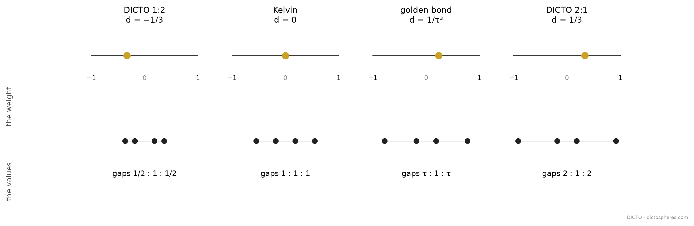

In the web of bonds (#52, #53) one number drives everything: the weight difference d between the two kinds of site of the body-centred cubic arrangement. Sliding d from −1 to 1 moves the shared walls, and the cells pass from the octahedron through the DICTO 1:2 (d = −1/3), Kelvin's truncated octahedron (d = 0), the golden bond (d = 1/τ³) and the DICTO 2:1 (d = 1/3) to the cuboctahedron; #52 and #53 call this the golden loop. Chapter 2 read the cells as permutohedra of four values; this chapter shows that the weight itself is a statement about those values: it measures how unevenly they are spaced.
d = (g − m) / (g + m),
and the cell of each B site is the permutohedron whose gaps are in the reciprocal ratio, m, g, m (the same formula with −d).Proof. By #90 (Proposition 6) the A cell is C ∩ μC* with μ = (3 + d)/2, that is {|yi| ≤ 1, |e·y| ≤ (3 + d)/2} for the eight e = (±1, ±1, ±1): the walls towards the six nearest A sites 2ei and the eight nearest B sites e. (No other site cuts it: the power cell lies inside this region, and these regions for A and B already fill space by #90, so the two are equal; checked also exactly, corner by corner, against every site within ±8 at d = −99/100, −1/3, 0, 1/τ³, 1/3 and 99/100.) The permutohedron of −q, −p, p, q is, after the isometry of #105 (Theorem 4), the hull of the signed orders of (p + q, q − p, 0): its squares lie on the planes |yi| = p + q and its hexagons on |e·y| = 2q. Scaling to p + q = 1 and matching 2q = (3 + d)/2 gives q = (3 + d)/4 and p = (1 − d)/4, so the gaps are g = q − p = (1 + d)/2 and m = 2p = (1 − d)/2, and (g − m)/(g + m) = d. Changing d to −d exchanges g and m. ∎ (Checked exactly at d = −1/3, 0, 1/τ³, 1/3 and 2/7, corner by corner: weight_map.py, log kept with the study.)

| stop | weight d | gaps g : m : g (A cell) | A cell | B cell |
|---|---|---|---|---|
| Kelvin | 0 | 1 : 1 : 1 | Kelvin's truncated octahedron | the same |
| DICTO 1:2 / 2:1 | −1/3 | 1/2 : 1 : 1/2 (values 1, 2, 4, 5) | DICTO 1:2 Truncated Octahedron | DICTO 2:1 Truncated Octahedron |
| the golden bond | 1/τ³ | τ : 1 : τ | Icosaxes | Unborn Axes |
At d = 0 (equal weights, the body-centred cubic Voronoi tiling) the gaps are equal: Kelvin's cell. The partner T(1/x) of #48 is the same rule seen from the other kind of site. The golden bond is the golden spacing. At d = (τ − 1)/(τ + 1) = 1/τ³ the outer gaps are τ times the middle one; by Chapter 1 every hexagon of the cell is then a golden truncated triangle. The DICTO pair is the spacing 1 : 2. At d = −1/3 (μ = 4/3) the A cell is the permutohedron of 1, 2, 4, 5 and the B cell that of −5, −1, 1, 5; by #93 (Theorem A, P4/3 and Q4/3) they fill space in this one way only.
In #48's parameter, x = (1 + d)/(1 − d) is the gap ratio g/m, and the weight is d = (x − 1)/(x + 1), the form given in #53 (Corollary 1); #52 states the same walk at the scale L = φ (φ = τ, the golden ratio), where the weight difference carries the factor φ²/4; #90's μ is (3 + d)/2.
DICTO: #48 The Golden Split (Theorem 4, T(x) and T(1/x)); #52 The Web of Bonds (the power-diagram walk, Main theorem); #53 The Global Web of Bonds (Corollary 1, λ = (x − 1)/(x + 1)); #90 Golden on the Octahedron, Silver on the Cube (Proposition 6, the cells C ∩ μC*); #93 One Double Pyramid, Two Splits (Theorem A); #105 (Theorem 4, the isometry); Chapter 1 of this book (the truncated triangle). F. Aurenhammer, Power diagrams: properties, algorithms and applications, SIAM J. Comput. 16 (1987) 78–96; W. Thomson (Lord Kelvin), Phil. Mag. (5) 24 (1887) 503–514 (the truncated octahedron as the body-centred cubic cell). The power-diagram walk and its cells are #52's, #53's and #90's; reading the weight as the relative difference of the gaps between four values is this book's.